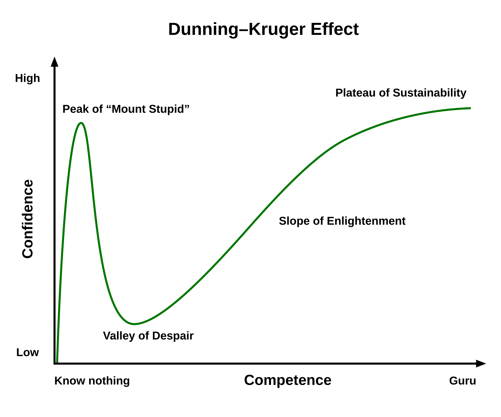

- Technical competence is the foundation: focus on building a strong foundation in relevant technical skills. A strong GPA is always a great reflection of your dedication to technical competence.
- Hands-on skills are critical: gain hands-on experience through course projects, research experience with professors, and obtaining relevant certifications, etc.
- Professional Connections are usually the most effective: work closely with the career development and success center to buid professional connections with alumni and professionals in the field. You can also build up your professional network through joining professional organizations, attending professional conferences, etc. Recommendations from your professional network can be invaluable for securing internships and job opportunities!
- Start early: implement the above three suggestions as early as possible, do not wait until your last year to start these preparations.
Everyone has a different journey for success, but here are some general tips that can help you start a career in cybersecurity and computer science:
For entry-level positions, consider pursuing the CompTIA Security+ certification, Google Cybersecurity Professional Certificate, ISC2 Certified in Cybersecurity, etc. For more advanced roles, the CISSP (Certified Information Systems Security Professional) and CEH (Certified Ethical Hacker) are highly regarded.
It's resilience. Most of students who choose to drop out they will drop out when they finish the first year of college (during their "Valley of Despair" phase). However, college life usually gets more joyful as you progress and find your footing after that, which can be best illustrated through the "Dunning-Kruger effect curve":
